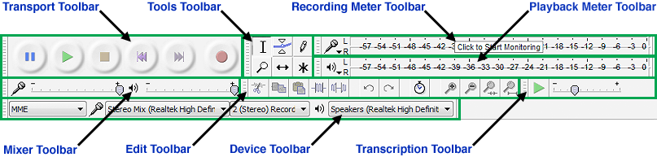
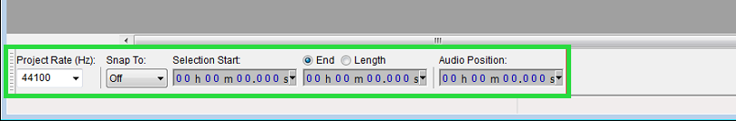
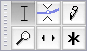
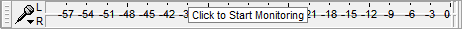
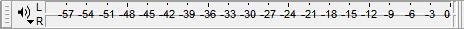
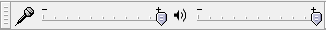
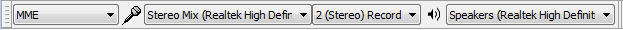
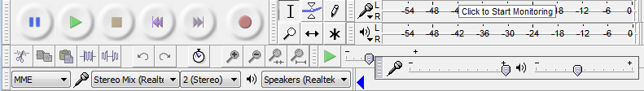
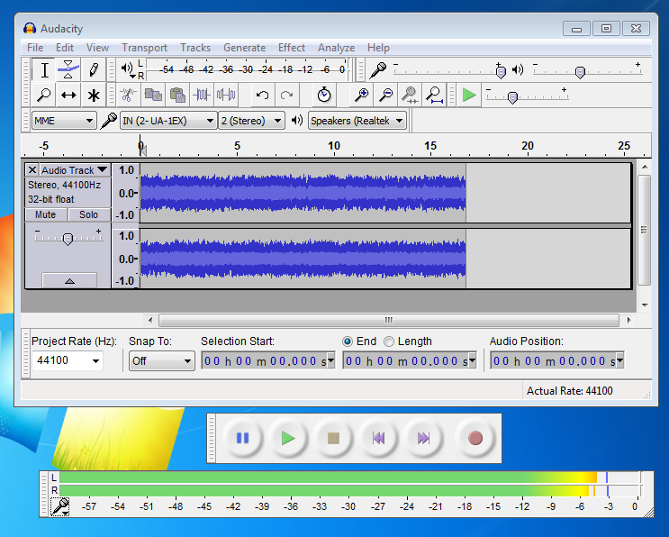

Toolbars Overview
From Audacity Manual
- The Meter toolbars are a special case. You may have one or both of the separate Recording and Playback Meter toolbars visible (both are visible by default). Alternatively you can have only the Combined Meter Toolbar visible (which displays recording and playback levels in a single meter).
Toolbar dock areas
There are two dock areas for toolbars in Audacity. By default, most of the Audacity toolbars are in the upper dock, with only the Selection Toolbar in the lower dock.
Toolbars can be arranged and resized within either of the two docks, or floated free of the docks.
Hover over each green-bordered toolbar in the dock images to learn more then click to go to that toolbar's details page. Or jump to the brief toolbar descriptions.
Upper Toolbar dock area
- 
Lower Toolbar dock area
By default the lower dock only contains Selection Toolbar.
- 
The Toolbars
The individual toolbars are described briefly below. Click on any toolbar image to go the details page for that toolbar.
Transport Toolbar
-
- Controls playback and recording and skips to start or end of project when neither playing or recording.
Tools Toolbar
- 
- Chooses various tools for selection, volume adjustment, zooming and time-shifting of audio.
Recording Meter Toolbar
- 
- Displays recording levels and toggles input monitoring when not recording.
Note the two vertical bars at the right of this toolbar which mean that this toolbar can be resized by clicking and dragging on the bars.
- Displays recording levels and toggles input monitoring when not recording.
Playback Meter Toolbar
- 
- Displays playback levels.
Note the two vertical bars at the right of this toolbar which mean that this toolbar can be resized by clicking and dragging on the bars.
- Displays playback levels.
Mixer Toolbar
- 
- Adjusts the recording and playback volumes of the devices currently selected in Device Toolbar.
Edit Toolbar
Transcription Toolbar
Device Toolbar
- 
- Selects audio host, recording device, number of recording channels and playback device.
Note the two vertical bars at the right of this toolbar which mean that this toolbar can be resized by clicking and dragging on the bars.
- Selects audio host, recording device, number of recording channels and playback device.
Selection Toolbar

- Controls the sample rate of the project, snapping to the selection format and adjusts cursor and region position by keyboard input.
The default position of Selection Toolbar is at the bottom of the main Audacity window, thus it is not visible in the Toolbars image at the top of this page.
- Controls the sample rate of the project, snapping to the selection format and adjusts cursor and region position by keyboard input.
Spectral Selection Toolbar
- Displays and lets you adjust the current spectral (frequency) selection without having to be in one of the spectrogram views.
- This toolbar is not shown by default. Select to show the toolbar, which by default docks in the lower dock, beside or under Selection Toolbar.
- Choose your preferred format option from the dropdown menu above the boxes: or .
{kind=link}
Arranging and resizing Toolbars
Toolbars can be docked in two toolbar areas of the Audacity Project window, providing there is space available: either above the Timeline, or above the Status Bar at the bottom of the window (Selection Toolbar is in this location by default). Toolbars may also be floated anywhere else in or outside the project window, including on a secondary monitor. The toolbar positions on exiting Audacity are always remembered when restarting Audacity next time.
Toolbars can be docked or floated by dragging on their serrated left edge. When docking a toolbar into a toolbar area, a blue triangle will appear, indicating an available docking position. The default toolbar docked positions can be restored at any time by clicking . Some of the Toolbars can be resized (the Meter Toolbars and the Device Toolbar) by clicking and dragging on the vertical bars at the right of the toolbars.
- The image below shows Mixer Toolbar being docked to the right of Device Toolbar:
- 
- The image below shows the Transport and Recording Meter toolbars floated outside the Project window, with the Recording Meter dragged wider and taller:
- 